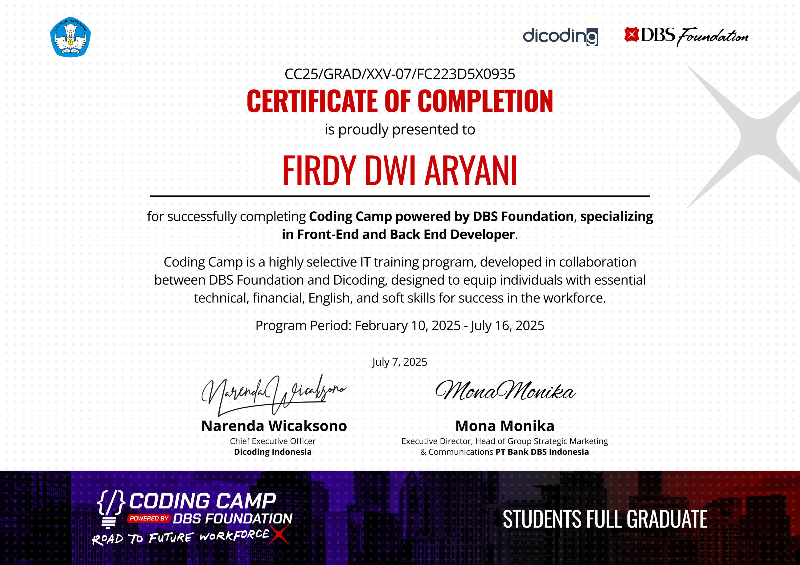
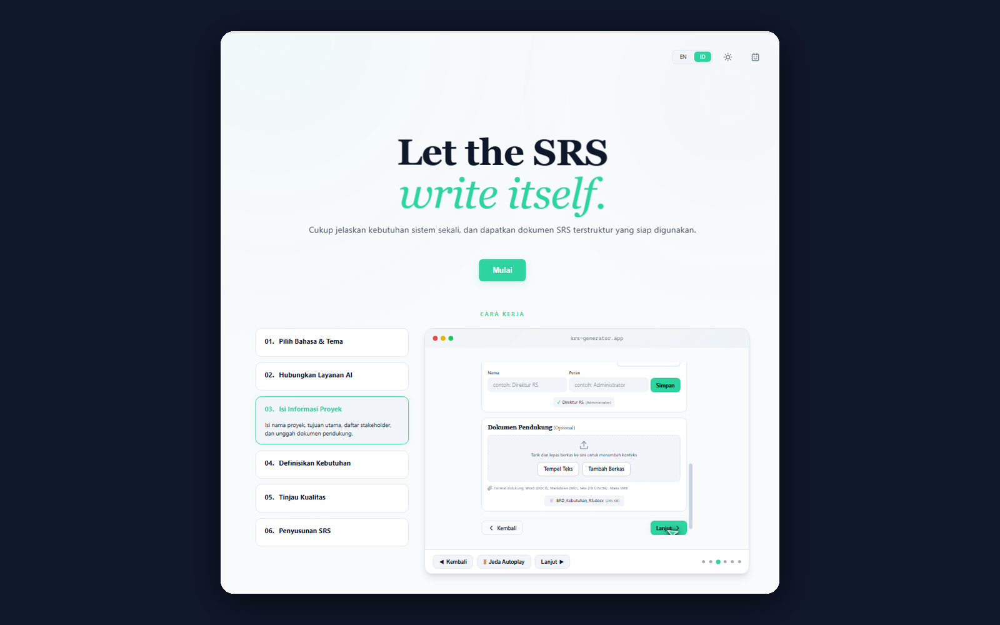
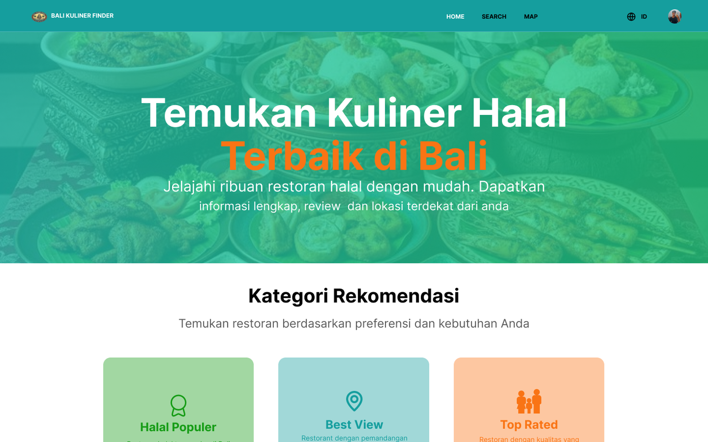
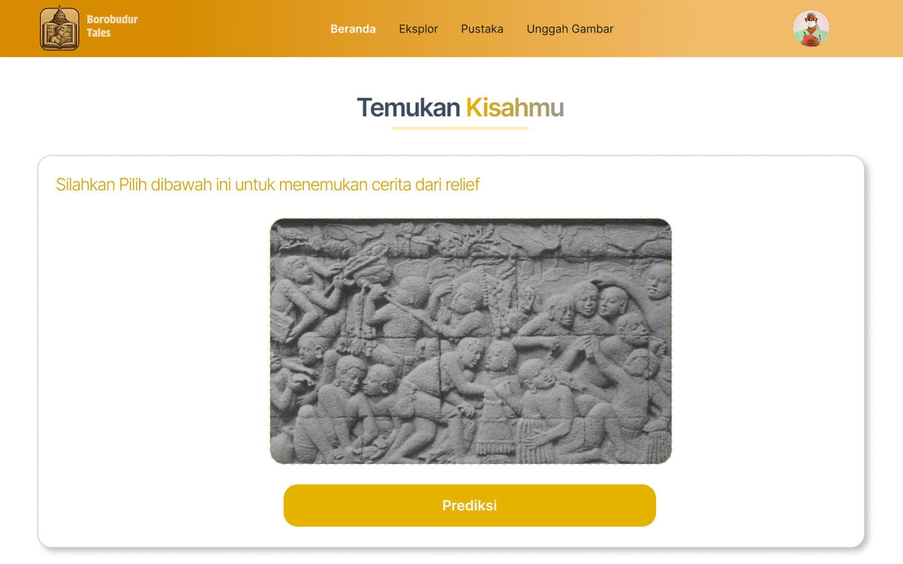

Dari memahami kebutuhan hingga mewujudkan solusi.
Perjalanan kerja saya diwarnai beragam peran, dari pengembangan web dan dukungan IT hingga pengelolaan kanal digital dan koordinasi kegiatan. Dari setiap peran, saya belajar menata langkah kerja, memperhatikan detail, dan menyesuaikan pendekatan dengan kebutuhan. Saya menikmati proses mencari tahu apa yang perlu dilakukan dan memastikan setiap pekerjaan selesai dengan baik.
Pengalaman Profesional
IT Support (Intern)
PT KAI Medika Indonesia • Brawijaya Hospital Tangerang
Tantangan
Operasional rumah sakit di gedung 5 lantai menuntut keandalan seluruh infrastruktur IT, sistem informasi, dan konektivitas jaringan agar pelayanan medis berjalan tanpa hambatan.
Hasil & Kontribusi
- Menangani lebih dari 15 tiket insiden IT per hari di 5 lantai operasional rumah sakit secara end-to-end, mulai dari diagnosis hingga penyelesaian, meliputi troubleshooting hardware, sistem operasi, dan jaringan (konfigurasi IP, konektivitas server), baik secara on-site maupun remote melalui AnyDesk.
- Mengoptimalkan operasional mesin anjungan pendaftaran mandiri (kiosk check-in) dengan merancang panduan visual langsung pada fisik mesin sehingga berhasil mengurai antrean dan memperlancar registrasi pasien.
- Menata ulang tata kelola 300+ aset IT rumah sakit menggunakan label barcode ber-ID unik, memproses pengajuan pengadaan perangkat baru, serta memasang instalasi komputer dan jaringan untuk operasional gedung baru.
Staf Magang Bidang Statistika & Persandian
Bidang Statistika dan Persandian, Diskominfo Kab. Lebak
Tantangan
Pemerintah daerah membutuhkan pengawasan keamanan situs web secara berkala dari serangan siber serta penerapan tanda tangan digital resmi guna menjamin keaslian dokumen kedinasan aparatur sipil.
Hasil & Kontribusi
- Memonitor situs resmi pemerintah daerah secara berkala dari insiden keamanan siber seperti peretasan tampilan situs (defacement) dan penyusupan konten ilegal, serta menyusun laporan teknis untuk eskalasi penanganan tim tanggap insiden.
- Memproses registrasi dan verifikasi teknis tanda tangan digital bagi Aparatur Sipil Negara (ASN) bekerja sama dengan balai sertifikasi elektronik guna menjamin keaslian berkas kedinasan.
- Melayani konsultasi teknis helpdesk bagi masyarakat sipil dan staf dinas dalam mengatasi kendala akun serta akses portal layanan sistem informasi daerah.
Digital Communication Officer
Fakultas Sains dan Teknologi, UIN Sunan Kalijaga
Tantangan
Kebutuhan publikasi dan tata kelola informasi terintegrasi lintas 9 program studi serta 20+ agenda fakultas menuntut koordinasi jadwal yang ketat, standardisasi konten multi-kanal, dan komunikasi stakeholder yang responsif.
Hasil & Kontribusi
- Mengelola kebutuhan publikasi 9 program studi serta 20+ agenda fakultas secara paralel dan end-to-end, mulai dari perancangan identitas visual, pembuatan materi promosi, hingga produksi konten digital, iklan, dan dokumentasi, dengan penjadwalan pekerjaan berdasarkan kalender kegiatan dan tenggat masing-masing program studi.
- Mengkoordinasikan kebutuhan publikasi dan sistem informasi dengan dosen, staf, dan panitia kegiatan, mulai dari pengumpulan kebutuhan (requirement gathering), penentuan spesifikasi teknis, hingga memastikan delivery pekerjaan selesai sesuai jadwal.
- Mengelola 4 kanal digital fakultas (website, Instagram, Facebook, dan YouTube), meliputi pembaruan informasi, pengelolaan konten, serta pengeditan dan pengembangan tampilan website.
Junior Web Developer & UI/UX Designer — Intern
PT Vinix Seven Aurum
Tantangan
Klien dan pengguna membutuhkan platform web komersial yang cepat, stabil, dan bebas kendala teknis saat peluncuran, terutama pada penanganan data kuliner dalam jumlah besar serta tampilan yang harus tetap rapi di berbagai jenis perangkat.
Hasil & Kontribusi
- Menjaga stabilitas operasional platform web komersial agar siap diluncurkan sesuai jadwal melalui pengembangan modul backend berbasis PHP dan penataan alur logika sistem yang rapi.
- Merancang dan mengelola struktur basis data relasional MySQL untuk direktori tempat makan, menu, dan ulasan guna memastikan proses pencarian serta filter informasi berjalan lancar.
- Memperoleh predikat evaluasi Sangat Baik dari manajemen atas kinerja selama masa magang berkat ketepatan waktu dalam menyelesaikan setiap tugas teknis dan kerja sama aktif bersama tim.
Pelatihan & Sertifikasi
Coding Camp powered by DBS Foundation
Jalur Full-Stack Web Development
Terpilih dari 63.356 pendaftar (tingkat penerimaan 5%) pada program beasiswa intensif kolaborasi DBS Foundation dan Dicoding Academy, dengan beban belajar 910 jam yang terakreditasi Kemendikbudristek. Kurikulumnya mencakup logika komputasi, front-end modern, RESTful API dengan Node.js dan Hapi, komputasi awan AWS, hingga komunikasi bisnis bersama The British Institute. Saya menyelesaikannya dengan predikat Grade A, Full Graduate, serta nilai proyek akhir Capstone 96,4 dari 100.

Keahlian & Materi 910 Jam Pembelajaran
-
Front-End Web Development: HTML5, CSS3, JavaScript ES6+, Responsive Design, Progressive Web Apps
-
Back-End & RESTful API: Node.js, Hapi Framework, RESTful API Design, Postman API Testing
-
Cloud & Tooling: AWS Cloud, Git, GitHub
-
Soft Skills & Komunikasi: Business English, Problem Solving, Kolaborasi Tim
Proyek Unggulan

Sistem Penyusunan Dokumen SRS (Multi-LLM)
Platform Pemandu Penyusunan Dokumen Spesifikasi Software Standar IEEE Berbasis Multi-LLM
Banyak pengembang sistem dan akademisi menghadapi kendala dalam menyusun dokumen Software Requirements Specification (SRS) yang sesuai dengan standar IEEE. Penyusunan secara manual memerlukan waktu signifikan, rentan terjadi inkonsistensi format, dan penggunaan model AI generatif tanpa pembatasan (guardrail) ketat kerap memicu halusinasi yang menyimpang dari kebutuhan riil sistem.
Membangun aplikasi web full-stack mandiri (JavaScript & Node.js Express REST API) yang berfungsi sebagai sistem pemandu langkah demi langkah: memandu pengguna mendefinisikan kebutuhan sistem, membatasi AI dengan guardrail dan aturan prompt ketat agar tidak berhalusinasi, serta fleksibel dihubungkan ke model AI mana pun (OpenAI, Claude, Gemini, DeepSeek, Groq, hingga LLM lokal) dengan konfigurasi API key langsung dari UI.
- Memandu pengguna dari nol hingga menghasilkan dokumen SRS lengkap yang rapi dan konsisten sesuai standar resmi industri.
- Aturan prompt ketat memastikan AI hanya menghasilkan spesifikasi fungsional dan teknis yang realistis, logis, dan dapat dieksekusi tim developer.
- Mendukung penggunaan beragam model cloud berbayar, layanan tingkat gratis (free tier), maupun model lokal offline, serta ekspor hasil dokumen secara langsung ke format DOCX dan Markdown.

Bali Kuliner Finder
Platform Web Direktori Kuliner Komersial (Pre-Release) dengan Kurasi Halal & Navigasi Rute
Wisatawan di Bali sering kesulitan menemukan tempat makan yang tepat sesuai preferensi mereka—baik mencari kuliner halal yang terverifikasi, kuliner khas non-halal, tempat dengan pemandangan terindah (sunset/alam), maupun tempat terdekat dengan ulasan jujur.
Berkolaborasi bersama tim pengembang di PT Vinix Seven Aurum untuk membangun platform direktori kuliner komersial (tahap pre-release): merancang prototipe antarmuka interaktif di Figma, merancang database relasional MySQL, mengembangkan backend PHP, serta membuat sistem filter multi-kategori, fitur ulasan & favorit pengguna, dan peta navigasi rute.
- Memisahkan kategori Halal dan Non-Halal secara transparan, serta menyediakan filter pencarian berdasarkan panorama pemandangan, penilaian tertinggi, daftar favorit, dan jarak terdekat.
- Pengunjung dapat memberi rating bintang, menulis ulasan pengalaman bersantap, serta menyimpan restoran favorit ke daftar pribadi.
- Terintegrasi peta interaktif agar pengguna dapat langsung membuka petunjuk arah jalan ke lokasi tempat makan dari browser.

BorobudurTales
Aplikasi Web Edukasi Budaya & Identifikasi Relief Karmawibhangga Berbasis Kamera AI
Sebagian besar pengunjung Candi Borobudur menikmati keindahan arsitektur tanpa memahami narasi sejarah serta nilai filosofis pada reliefnya. Selain itu, referensi digital mengenai makna setiap panel relief Karmawibhangga masih sangat terbatas dan tersebar secara fragmentaris, sehingga menyulitkan proses pembelajaran mandiri.
Berperan sebagai Front-End Developer dalam tim Capstone: merancang dan membangun antarmuka web interaktif yang modern dan responsif (Tailwind CSS & Vite), membuat alur kamera real-time dan upload foto yang mulus, serta menghubungkan input visual pengguna ke endpoint API model Machine Learning tim untuk menampilkan narasi kisah budaya secara instan.
- Mengubah wisata pasif menjadi eksplorasi edukatif interaktif dengan mengarahkan kamera ke relief candi untuk memunculkan narasi sejarah dan nilai moralnya seketika.
- Menyediakan katalog digital panel relief Karmawibhangga lengkap yang dapat dicari melalui kata kunci maupun pencocokan foto visual.
- Performa web mobile dioptimalkan agar tangkapan kamera, kompresi foto, dan rendering narasi berjalan mulus di perangkat ponsel pengguna.
Organisasi & Kepanitiaan
Koordinator Logistik
Dies Natalis ke-20 Fakultas Sains dan Teknologi (Symphony of Saintek) • FST UIN Sunan Kalijaga
Mengoordinasikan logistik 12+ vendor perlengkapan teknis panggung Dies Natalis Fakultas ke-20, meliputi penjadwalan dan penataan barang di lokasi, pengambilan dan pengembalian barang, serta penanggung jawab atas barang vendor, untuk memastikan acara berjalan tanpa kendala dan tanpa kerusakan barang.
Staf Divisi Minat & Bakat
Himpunan Mahasiswa Informatika (HMPS Informatika) • UIN Sunan Kalijaga
Mengorganisir kegiatan mingguan divisi Minat & Bakat sekaligus memegang tiga peran kepanitiaan: Sekretaris UIN Informatic Competition tingkat DIY (persuratan, perizinan, sertifikasi, dan pendataan peserta), Bendahara acara orientasi (menyusun dan mengatur anggaran dari awal hingga akhir, termasuk kebutuhan peserta menginap), dan Humas turnamen Sportif (mencari vendor hingga deal dengan dana terbatas, dipilih berdasarkan harga, waktu, dan kesesuaian).
Sekretaris Pelaksana
UIN Informatic Competition 5.0 (UINIC) • HMPS Informatika UIN Sunan Kalijaga
Mengelola administrasi pendaftaran UIN IT Competition (UINIC), kompetisi IT tahunan himpunan tingkat DIY dengan banyak cabang lomba, dengan memverifikasi kelengkapan berkas seluruh peserta menggunakan spreadsheet sehingga data siap sebelum technical meeting. Menyusun surat perizinan kampus dan surat kerja sama dengan vendor eksternal, serta menerbitkan sertifikat digital peserta dan panitia sesuai jadwal acara.
Humas & Kemitraan
Penyambutan Mahasiswa Baru (Welcoming Ceremony) • BEM & Senat Mahasiswa Universitas (DEMA & SEMA UIN)
Memimpin komunikasi eksternal dan negosiasi kemitraan dengan puluhan perusahaan dan vendor logistik, menghasilkan 10+ kesepakatan sponsorship dan pasokan produk resmi untuk mendukung orientasi ribuan mahasiswa baru.
Staf Media dan Jaringan
Forum Kajian Islam dan Sains Teknologi (FKIST) • UIN Sunan Kalijaga
Mengelola website resmi dan 4 akun media sosial serta mendokumentasikan seluruh program kerja, dari promosi hingga hari pelaksanaan, dan mengorganisir ±5 pelatihan yang terbuka untuk umum.